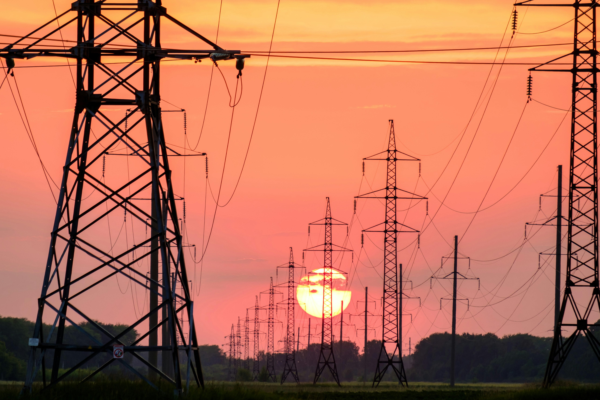
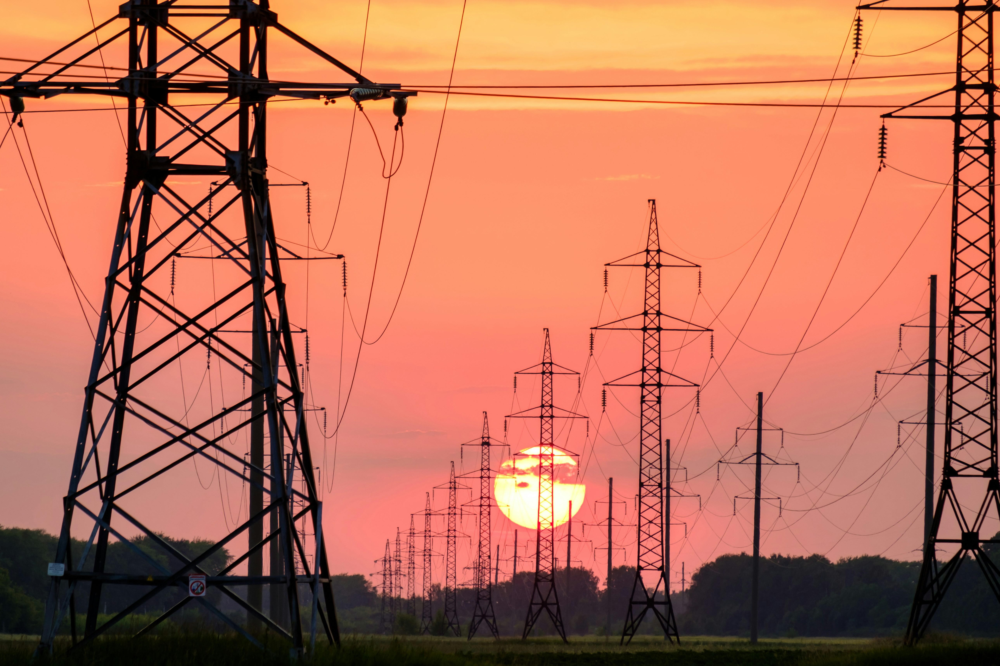

tu propia planta eléctrica personal
Energicasa
Planta eléctrica personal que integra fuentes de energía renovable, con el fin de brindar energía eléctrica de forma autónoma y menos costosa.
Problematica
La falta de electricidad confiable y los altos costos en México son un problema serio. Se trata de interrupciones en el suministro eléctrico, cambios en el voltaje y tarifas elevadas que afectan tanto a hogares como a negocios. Esto causa pérdidas económicas, daños a equipos y molestias para los usuarios. Además, los precios de la electricidad en México son más altos que en otros países de la región, lo que dificulta el acceso a servicios básicos como la iluminación y la refrigeración, impactando negativamente en la economía y el bienestar de los ciudadanos.
Justificación
Este proyecto abordara la problemática de las fallas de energía y los altos costos en México. Las deficiencias en las plantas eléctricas, el mantenimiento y las fallas en la red resultan en un servicio deficiente y tarifas elevadas. Exploraremos cómo las nuevas tecnologías permiten una generación más limpia y controlada de energía, capacitando a los usuarios para producir su propia energía. También enseñaremos el por qué el sistema eléctrico actual en México es deficiente y por qué puede ser más beneficioso producir energía de manera independiente.
 
